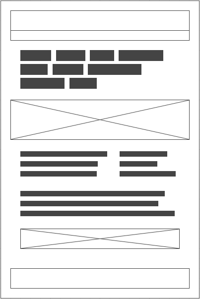
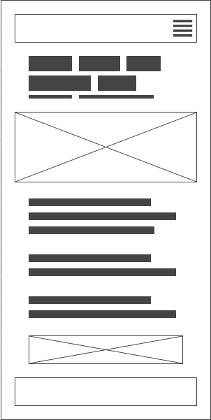

Site Name
The name of the site will be Sahuarita Chamber of Commerce. I chose the name by taking the name of my town and adding the term Chamber of Commerce to it.
Site Purpose
The purpose of this site is to address to things. The first is to make multiple opportunities and businesses available to the public in an easy and inobtrusive way. The second is to provide service opportunities for the community where available.
Scenarios
Scenario1: What events will the chamber be holding this month that promote business-to-business networking?
Scenario2: Where can I go to find opportunities to help out in the community?
Scenario3: How
Color Schema
Orange | #ffa500
Grey | #808080
Typography
Font 1: Arial - I have chosen Arial as my first font because it is a basic font that can reliably found on almost every device. I also like the style.
Font 2: Roboto Slab - I have chosen Roboto Slab as my second font because the bold style of the font serves as a nice contrast to the normal font.
Example: The quick brown fox jumps over the lazy dog.
Example: The quick brown fox jumps over the lazy dog.
Wireframe
Desktop Version
Mobile Version
